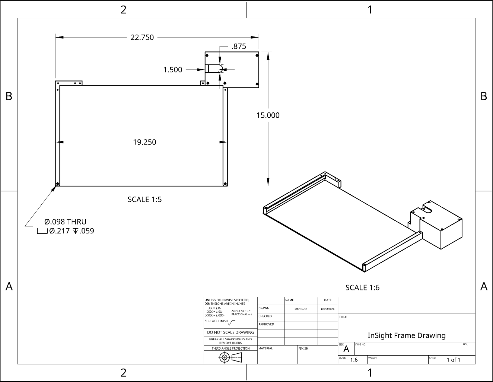

How It Works
End-of-line touch timing
V2 measures reading speed by detecting when the student touches the end of each line — no mid-read interruptions, no guides.
1
Place Paper on the Non-Slip Mat
The Braille page is placed on the non-slip mat, keeping it
stable and preventing any drift during the session.
2
Read Naturally — No Guide Required
The student reads each Braille line without any line blocker or
physical guide, preserving their natural reading posture and
tactile experience.
3
Tap the End-of-Line Sensor
At the end of each line, the student taps the linear
potentiometer / pressure sensor. The device logs a timestamp
marking that line's completion.
4
Time Difference = Line Speed
The difference between consecutive tap timestamps gives the
reading time for each line, calculated using the standard
40-characters-per-line convention.
5
Data Sent to Google Sheets
Line-by-line timing data is uploaded as a CSV to a hotspot
webpage, where a Google Apps Script automatically generates
fluency graphs for teachers.

